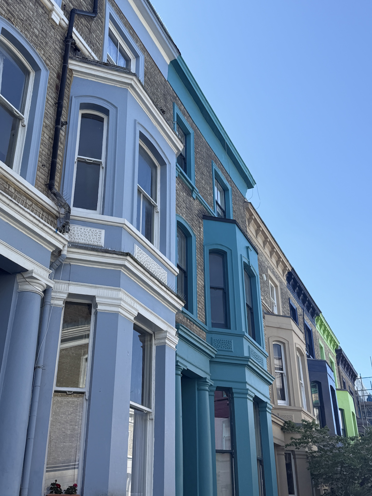

A Semester in the City
London became my home base during my semester abroad — a city that constantly balanced the traditional with the modern.
Weekdays were filled with design classes, late-night bus rides, and weekend markets. I loved mornings at Borough Market, afternoons sketching at the Tate Modern, and evenings along the South Bank watching the skyline glow.
London Highlights



My London Recommendations
- Tower of London
- Borough Market
- Notting Hill (Portobello Market)
- Camden Market
- Big Ben & Parliament (Tour inside if you can!)
- The Shard
- Buckingham Palace
- Tower Bridge
- London Eye
- Westminster
- Primrose Hill (Amazing sunset views!)
- Battersea Power Station
- St. James’s Park
- Sky Garden
- British Museum
- Imperial War Museum
- Design Museum
- National Gallery
- National Maritime Museum
- National Portrait Gallery
- Cartoon Museum
- Tate Modern
- The Royal Academy of Arts
- Tavolino
- Dishoom
- Pho & Bun
- Wong Kei
- Franco Manca (Chain – easy to find!)
- The Wolseley (Upscale but incredible atmosphere)
- Wetherspoons (Chain pub food – always solid)
- Honestly, any local pub will have great food!
- Visit a university farmers market — UCL’s is on Thursdays and has amazing local food!
- Les Misérables
- The Lion King
- Mamma Mia
- Phantom of the Opera
- Matilda
- Wicked
- Book of Mormon
- Hamilton
- Albert’s Schloss
- Roxy’s (Half-off pitcher nights on Thursdays!)